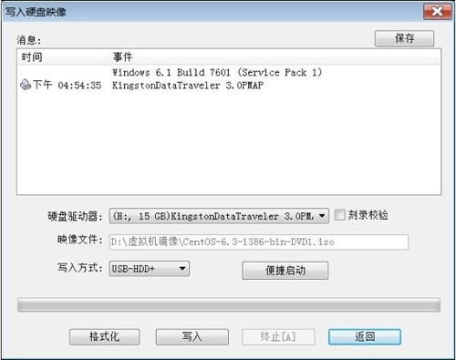
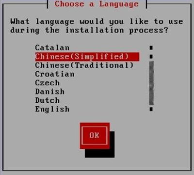
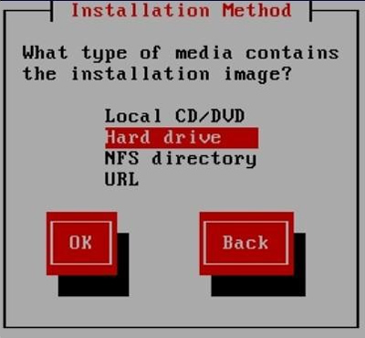
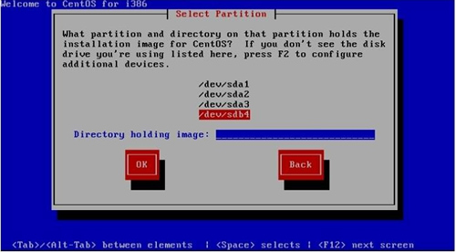

首页 > 编程笔记
U盘安装Linux系统
前面章节介绍了如何通过虚拟机 VMware 安装 Linux 系统，而实际开发中，我们更多的是要将 Linux 系统直接安装到电脑上。
直接在电脑上安装 Linux 系统的常用方法有 2 种，分别是用光盘安装和用 U 盘（包括移动硬盘）安装。但由于光盘介质不方便携带、多数电脑不自带光驱等因素，这种安装方式正逐渐退出历史舞台，所以本节讲解如何使用 U 盘安装 Linux 系统。
之后的安装过程就比较简单了，在此不再赘述。
直接在电脑上安装 Linux 系统的常用方法有 2 种，分别是用光盘安装和用 U 盘（包括移动硬盘）安装。但由于光盘介质不方便携带、多数电脑不自带光驱等因素，这种安装方式正逐渐退出历史舞台，所以本节讲解如何使用 U 盘安装 Linux 系统。
前期准备
使用 U 盘安装 Linux 系统，需要准备以下工具：- 大容量的U盘（安装 CentOS 6.x 系统，U 盘容量至少 8 G）；
- UltraISO 工具，用来制作 U 盘启动盘。除此之外，由于 UltraISO 工具是 Windows 软件，所以需要一台安装了 Windows 系统的计算机协助；
- CentOS 6.x 系统的 ISO 映像文件。
这里所使用的 UltralISO 只是制作 U 盘启动盘的工具之一，除此之外，还可以选择大白菜、老毛桃等软件，都可实现一键快速制作 U 盘启动盘。
U 盘安装 Linux 系统
U 盘安装 Linux 系统需经过以下几步：- 在装有 Windows 系统的电脑上下载和安装 UltraISO 软件。
-
用安装好的 UltroISO 制作 U 盘启动盘，具体操作为：
- 将 U 盘通过 USB 口插到计算机上；
- 启动 UltraISO 软件，依次选择 "文件->打开" 命令，找到已下载的 CentOS 6.x 安装映像文件（iso 文件）；
- 选择“启动->写入硬盘映像”命令，打开 "写入硬盘映像" 对话框，在 "硬盘驱动器" 下拉列表框中选择你的 U 盘（注意不要选错，因为这一步对 U 盘进行格式化操作）。"写入方式" 选择 "USB-HDD +"，然后单击 "写入" 按钮，等待写入完成，如图 1 所示。

图 1 写入硬盘映像 -
安装 CentOS 6.x：
- 插入 U 盘，设定 U 盘为第一个启动设备，重启之后出现安装界面。
-
选择第一项“Install or upgrade an existing system (安装或升级现有系统）”，进入安装语言选择界面，如图 2 所示。

图 2 安装语言选择
-
选择 "简体中文"，选择 "OK"，出现键盘选择界面。这里默认选择 "US" 美式标准键盘，选择 "OK"，出现安装方法界面，如图 3 所示。

图 3 安装方法
-
选择 "Harddrive (硬盘驱动）"，选择 "OK"，进入选择分区界面。这里分区使用 "/dev/sdb4" 代表 U 盘分区。"Directory holding image" 项用于搜索 U 盘 image 目录下的 install.img 文件，不用填写，系统会自动搜索，如图 4 所示。

图 4 选择分区
- 选择"OK"，进入图形安装界面。
之后的安装过程就比较简单了，在此不再赘述。
关注公众号「站长严长生」，在手机上阅读所有教程，随时随地都能学习。内含一款搜索神器，免费下载全网书籍和视频。

微信扫码关注公众号